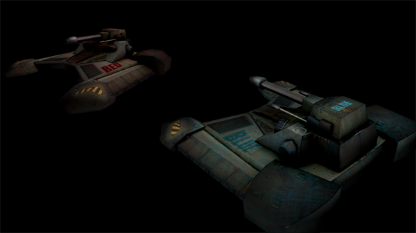

Megalodon
Playful UX, web
The game Megalodon (later called Strike Fortress) is a fast paced, 3D-immersive, Player vs Player, combat action game for the browser & mobile platform. The whole game is built using Javascript and WebGL, and UI part is implemented using compressed CSS. It’s the game that enables the player to jump right into the game, without the hassle of installing, setting up plug-ins, etc. It’s supported by EA and has been presented at Google IO Conference.
What I learned from this project is how to create a great user experience in game. By understanding the difference between game design and UX design and their similarities in game industry, I learned how to deliver the holistic gaming experience.
Our team is very diverse, consisting of designers, artists, and engineers, to build the most exciting immersive interactive experience online.
TBrainstorming , Concept Design, Wireframes, UI, Texture, Prototyping, Playtesting
Game design
Megalodon (Strike Fortress) showcased on Google IO 12
Megalodon 2-minutes Game Play video:
As a team we spent a lot of time working on the ideas on the game play, brainstorming, prototyping, communicating with stakeholders and potential users. The goal is to create a great game experience by making it challenging, explorable, and crazy juicy.
The game we made is a tower offense game, based on original EA IP. The game features fast paced multiplayer battles, different character classes with distinct weapons and abilities that can be upgraded, and a customizable battle kit of units that the player can summon to help them win the day.
Combating relationship between AI Units
Megalodon initial Map Layout
UX & UI design
The other big part of creating this great experience is UX & UI design. I learned that a successful game has certain common traits - a simple, elegant and functional interface and a UX design that focuses on getting the player completely immersed into the gameplay. UX seems to be viewed as the means to the ultimate end of creating a satisfying and pleasurable experience.
Therefore in this project, as a UX & UI designer, I put lots of effort in how to balance the usability and functionality with visual appeals.
Initial UI Design of AI Units by CSS (above first). The relationship between AI Units is presented out through UI.
The final UI Design of AI Units (above second). I used different motion graphic design to distinguish statuses of AI Units spawning and holding.
It shows changes from AI Unit spawning to AI Unit holding status.


Texture of Repulser - Tank.
Mobile App screen. Other than two players from web browser side combating with each other, another play is able to jump into the game from MOBILE side to “affect” game by dropping a mine to the one you dislike or giving a Crate to the one you want to help.
User Testing
Unlike computer programs and apps, a video game that is not usable is quickly rejected by gamers. For Meglogon, our team did a great number of play testings, within the whole team nearly daily, with OCCO people on Game Tournament Day, with kids on EA for Bring Your Child to Work Day, and with anyone who pass by EA lobby on our game Soft Opening Day.
Our team did a number of play testings, within the inner team daily, with OCCO people on Game Tournament Day, with kids on EA for Bring Your Child to Work Day, and with anyone who pass by EA lobby on our game Soft Opening Day.
More >>